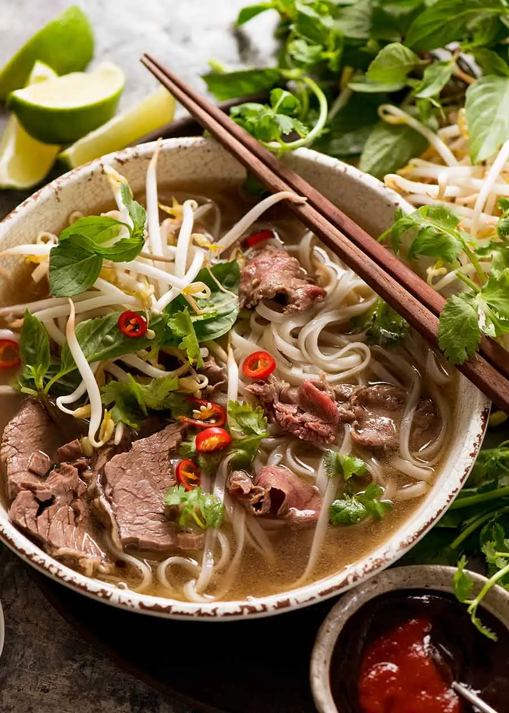

Pho recipe

Ingredients
Aromatics:
- 2 large onions
- 150g/5oz ginger
Spices:
- 10 star anise
- 4 cinnamon quills
- 4 cardamon pods
- 3 cloves
- 1.5 tbsp coriander seeds
Beef Bones (Choose 1):
- 1.5kg/3lb beef brisket
- 1kg/2lb meaty beef bones
- 1kg/2lb marrow bones
- 3.5 litres/3.75 quarts water
Seasoning:
- 2 tbsp white sugar
- 1 tbsp salt
- 40 ml/3 tbsp fish sauce
Noodle soup per bowl:
- 50g/1.5 oz dried rice sticks
- 30g/1 oz beef tenderloin, raw, very thinly sliced
- 3-5 brisket slices
Toppings:
- Beansprouts, handful
- Thai basil, 3-5 sprigs
- Coriander/cilantro, 3-5 sprigs
- Lime wedges
- Finely sliced red chilli
- Hoisin sauce
- Sriracha
Instructions
Aromatics
- Heat a heavy based skillet over high heat (no oil) until smoking.
- Place onion and ginger in pan cut side down. Cook for a few minutes until it's charred, then turn. Remove and set aside.
- Toast Spices lightly in a dry skillet over medium high heat for 3 minutes.
Remove impurities
- Rinse bones & brisket then cover with water in large stock pot.
- Boil for 5 minutes, then drain.
- Rinse each bone and brisket under tap water.
Broth
- Wipe pot clean, bring 3.5 litres / 3.75 quarts water to boil.
- Add bones and brisket, onion, ginger, spices
- Add onion, ginger, Spices, sugar and salt - water should just barely cover everything.
- Cover with lid, simmer 3 hours.
- Remove brisket (should be fall-apart tender), cool then refrigerate for later.
- Simmer remaining soup UNCOVERED for 40 minutes.
- Strain broth into another pot, discard bones and spices. Should be about 2.5 litres / 2.65 quarts (10 cups), if loads more, reduce.
- Add fish sauce, adjust salt and sugar if needed. Broth should be beefy, fragrant with spices, savoury and barely sweet.
Assemble
- Prepare rice noodles per packet, just prior to serving.
- Place noodles in bowl. Top with raw beef and brisket.
- Ladle over about 400 / 14 oz hot broth - will cook beef to medium rare.
- Serve with Toppings on the side!